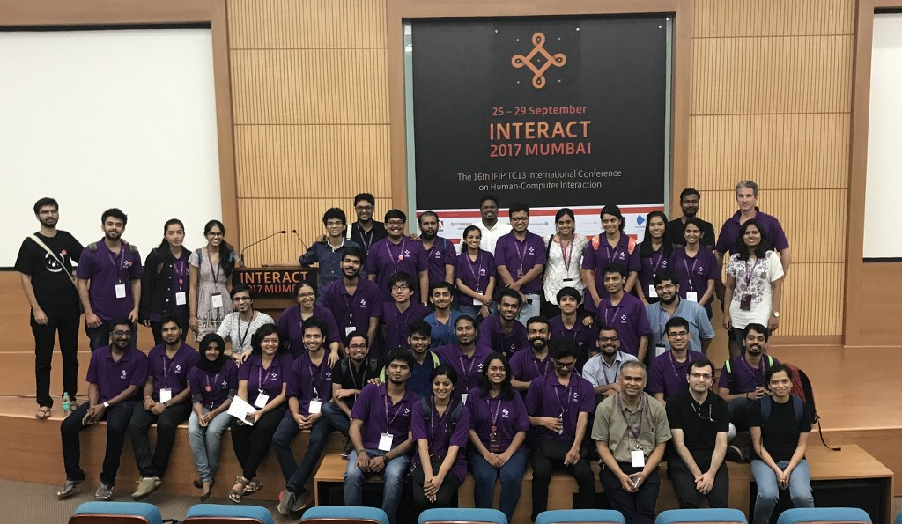

Student Volunteer Policy
The Student Volunteers (SVs) are at the heart of the IndiaHCI conference - managing important details on a day-to-day basis and, in many ways running the conference and making it all come together!
As an IndiaHCI 2018 student volunteer, you will have the opportunity to participate in the conference, attend sessions and meet other students and well-known Human Computer Interaction researchers and practitioners from India and around the world - people whom you have always appreciated for their contributions to the field.
We are looking forward to having motivated, enthusiastic and reliable student volunteers as part of our team, who are capable of working within a diverse group and support the conference behind the scenes.
Volunteer Benefits:
As a SV, you will receive:- We are looking forward to having motivated, enthusiastic and reliable student volunteers as part of our team, who are capable of working within a diverse group and support the conference behind the scenes.
- An SV t-shirt
- Access to the SV After-party
Depending on how the budget of the conference works out, you may also get some help with accommodation expenses, although this is NOT a promise yet!
Volunteer Tasks
SVs must agree to arrive at the conference early (see details below), attend the orientation sessions, show up on time for tasks assigned, and work for allotted number of hours. The SV chairs will allocate work to SVs before and during the conference.
You can expect to be doing tasks such as assisting with the conference registration, preparing and setting up of the conference rooms, providing technical support during the sessions, answering attendees’ questions, etc.
TYPES OF VOLUNTEERS
At INDIAHCI 2018, there will be three types of student volunteers —
- Local SVs
- Non-local SVs
- SVs who have a submission accepted at INDIAHCI 2018 Bangalore.
While there are many things common for all SVs, there are some important differences:
- As the name suggests, Local SVs are local to Bangalore. They need to put in at least 40 hours of work. Their work may include managing the registration process, designing INDIAHCI 2018 collaterals, coordinating with local suppliers around venues, social events and food, etc. Much of their work will happen before the conference (in some cases, way before the conference) and some during the conference.
- Non-local SVs and SVs with an accepted submission need to put in at least 20 hours of work. Some of their work will be before the conference and some during the conference such as providing help with the kits, signage, venues and registrations, or helping out with the logistics, managing workshops, etc.
All SVs must report to the SV Chairs on or before 10 am on Saturday (December 15, 2018).
At the moment, IndiaHCI 2018 plans to support 20 Local SVs, 15 Non-local SVs and 5 SVs with an accepted submission at the conference. If the conference budget permits, this number may be enhanced.
SV team at the Interact 2017 conference
Application process
To become an SV, you must be a full-time student during IndiaHCI 2018 Bangalore, or must have been a full-time student till June 2018.
Students can apply as SVs by filling the SV Registration section while purchasing a student ticket. At this time, you need to specify if you are applying as a Local SV or a Non-local SV, and share any past volunteering experience.
SVs will be selected through a random lottery, and if possible, they will be assigned tasks based on past volunteer experience.
All applicants will have to pay the student registration fee. Meanwhile, if you have a submission at the conference and receive an acceptance notification from any of the IndiaHCI 2018 tracks, you should forward it to svchair2018@indiahci.org.
SV selection will be announced as per the following tentative schedule:
- May 1, 2018: 10 Local SVs and 5 Non-local SVs
- June 1, 2018: 10 Local SVs and 5 Non-local SVs
- August 1, 2018: 5 Non-local SVs
- October 17, 2018: 5 SVs with an accepted submission
Please note that only people who have already registered for the conference will be considered for the SV selection. We recommend that you register early to get more chances of getting selected as an SV through the monthly lottery. Do note that if you have an accepted submission again, the chance of you getting selected are much higher.
Further process
Selected SVs must arrive at the Srishti Institute of Art Design and Technology, N5 Campus, on or before 10 am on Saturday (December 15, 2018) and report to the SV Chairs for the orientation. If you don’t show up by this time, you will be treated as a no-show and your student volunteership will be forfeited. In exceptional cases (such as floods or earthquakes), if you are not able to reach in time, you must inform the SV Chairs beforehand and take their approval to skip this meeting.
Students who have not been selected as SVs till September 1, 2018 will be allotted a position on the waiting list. Such students should also reach the IndiaHCI 2018 venue on or before 4 pm on (December 16, 2018.) In case of any no-shows, such students will be offered a student volunteership on the spot at this time.
Once the SV Chairs report that an SV has completed the required number of hours, he/she will be refunded the registration fee paid. Please note that if you cancel your registration for IndiaHCI 2018, the standard cancellation policies will apply for your refunds.
If you have any questions or comments please contact the Student Volunteer Co-chairs at svchair2018@indiahci.org
FAQ
Q: Can I skip paying student registration fees and still become an SV?
A: No. Only those who have paid student registration fees will be enrolled in the lottery mentioned above. We are working to make funding opportunities available to students who cannot afford to pay these fees. We will announce them on this page once they become available. However, if you can, do register as a student and apply as an SV, as this will give you a higher chance to attend the conference for free.
Q: All the SV selections have been announced, but I really, really want to be a student volunteer. Is there any way I can?
A: If you will be attending INDIAHCI 2018 anyway, you may still register as a student and opt in for being a volunteer. If all selections have been announced, your name will be added to the end of the waiting list. That way, there is always a chance you may get selected in case of no-shows or in case the number of SVs are increased.
Q: I want to skip orientation, or work less than the allotted hours, or arrive late, can I still be an SV?
A: No, sorry. You always need to do all the work that is allotted. In exceptional cases (such as floods or earthquakes) if you are not able to reach in time, you must inform the SV chairs beforehand and take their approval to skip the orientation.
Q: I didn’t get your emails and/or forgot to register by the deadlines you guys sent us and I lost my spot as an SV, can I get it back?
A: No, if this is due to you missing out on the emails, sharing incorrect information during registration, or just forgetting to respond in time. In case you want to apply after all selections have been announced, refer to Q.2.
Q: Can I choose the work that I do?
A: Sometimes.If there is something you are really great at, let the SV chairs know in the registration form.